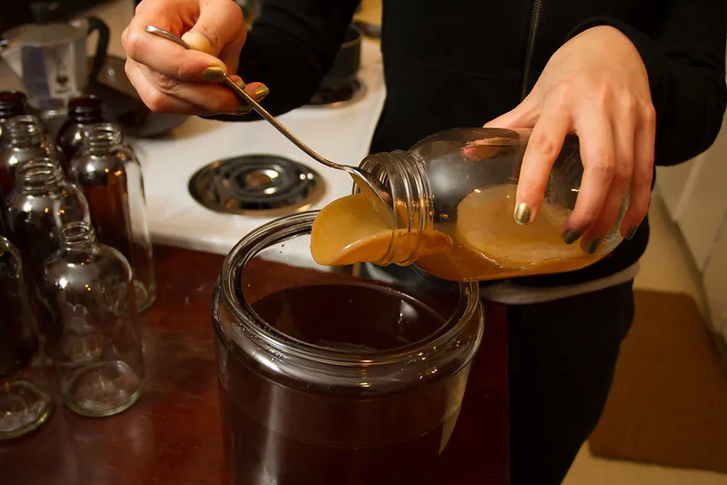
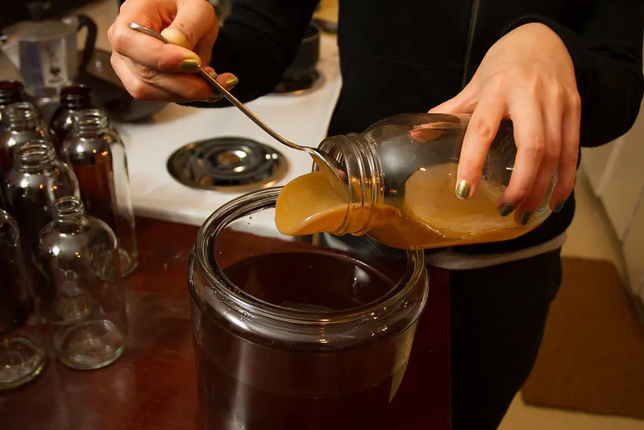

5 Minuman Kekinian yang Cocok untuk Kamu
 
Penasaran dengan minuman-minuman kekinian yang bisa jadi andalan di berbagai suasana? Di tengah hiruk-pikuk kehidupan sehari-hari, terdapat beberapa minuman yang mempesona, tak hanya dari segi rasa tapi juga keren untuk dinikmati. Nah, yuk simak lima minuman kece yang bisa banget jadi pilihan kamu!
Es Kopi Susu Boba
Sudah menjadi rahasia umum kalau boba atau bubble tea lagi ngetren banget. Tapi pernah coba es kopi susu versi boba? Gurihnya kopi susu dengan sentuhan manis dari boba membuat minuman ini sempurna untuk dinikmati sambil beraktivitas atau bersantai. Ada sensasi unik dari perpaduan kopi dan rasa kenyal dari boba yang bikin ketagihan.
Matcha Latte
Buat pecinta rasa yang sedikit pahit tapi menenangkan, matcha latte bisa jadi pilihan tepat. Warna hijau yang khas dan aroma rempah dari matcha diaduk dengan lembut dalam susu, menciptakan paduan yang menyegarkan. Dengan kandungan antioksidan tinggi, minuman ini juga bikin tenang di tengah hiruk-pikuk hari.
Kombucha
Kombucha mungkin terdengar asing, tapi minuman fermentasi ini sedang naik daun. Dibuat dari teh yang difermentasi, kombucha hadir dalam berbagai varian rasa, mulai dari fruity sampai herby. Selain rasanya yang unik, kombucha juga dikenal sebagai minuman yang baik untuk pencernaan dan kesehatan usus.
Es Teh Tarik Madu
Teh tarik yang biasa diolah dengan cara unik dari Malaysia ini sekarang punya versi kekinian dengan sentuhan madu. Rasa teh yang kuat dipadukan dengan kelembutan madu, memberikan kesegaran dan kehangatan pada setiap tegukan. Cocok banget diminum kapan saja, terutama di saat butuh semangat!
Smoothie Bowl
Kalau bosan dengan minuman cair, smoothie bowl bisa jadi alternatif yang seru! Campuran buah-buahan segar yang di-blend hingga lembut, lalu diberi topping granola, potongan buah, atau bahkan biji chia. Rasanya segar dan teksturnya unik, sekaligus cocok jadi sarapan atau cemilan sehat.
Setiap minuman punya pesona dan keunikan masing-masing. Dari yang menyegarkan hingga yang memberi kesan hangat, tersedia banyak pilihan yang bisa menemani berbagai momen dalam hidup. Jadi, mana minuman kekinian yang jadi favoritmu? Yang pasti, tak ada salahnya untuk sesekali mencoba yang baru dan menikmati sensasi yang berbeda!
Penasaran dengan minuman-minuman kekinian yang bisa jadi andalan di berbagai suasana? Di tengah hiruk-pikuk kehidupan sehari-hari, terdapat beberapa minuman yang mempesona, tak hanya dari segi rasa tapi juga keren untuk dinikmati. Nah, yuk simak lima minuman kece yang bisa banget jadi pilihan kamu!